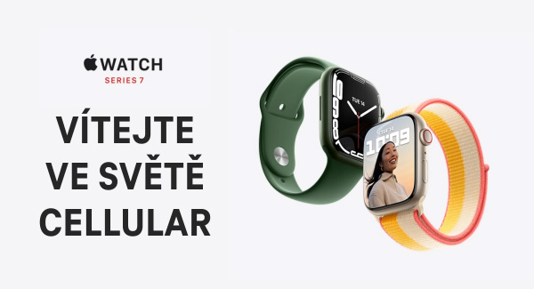

|  | ||||||||||||
|
||||||||||||
Jak aktivovat Apple Watch Connection
|
|
1. |
Obě zařízení si musí rozumět Služba funguje na modelech Apple Watch ve verzi GPS + Cellular určených pro evropský trh. Zároveň potřebujete iPhone 6s či novější s iOS 14 nebo novějším. |
||
|
2. |
Otevření aplikace Watch Otevřete na vašem iPhonu aplikaci Watch. Zde spárujete chytré hodinky s telefonem a můžete snadno aktivovat službu Apple Watch Connection. Pokud u hodinek nevidíte registraci do sítě T‑Mobile, na telefonu na chvíli zapněte tzv. režim letadla (nezapomeňte jej následně po minutě dvou opět vypnout). |
||
|
3. |
Přihlášení a aktivace Pro aktivaci Apple Watch Connection si připravte vaše uživatelské jméno a heslo, které využíváte pro přihlášení do Můj T‑Mobile /Moje firma. Přihlášení nelze provést pomocí jednorázového hesla. Založit nový účet a získat přihlašovací údaje můžete na webu www.t‑mobile.cz/muj‑t‑mobile. Také musíte znát poslední 4 čísla PUK2. Pokud ho neznáte, nejrychlejší způsob zjištění PUK2 je odeslat SMS ve tvaru PUK2 na 4603. Pokud jste firemní zákazník a nemůžete službu aktivovat, pravděpodobně máte tzv. omezené oprávnění. Kontaktujte prosím svého administrátora ve firmě, který může v samoobsluze povolení služby administrovat pod záložkou Služby – Nastavení služeb, v části Ostatní služby. Více informací a videomanuál k aktivaci Apple Watch Connection naleznete na www.t‑mobile.cz/apple-watch. |
|
|
|
Když budete mít aktivovanou službu Apple Watch Connection, můžete telefonovat, odpovídat na
zprávy či přijímat oznámení i bez toho, aniž byste museli mít váš iPhone u sebe. |
Toto je obchodní sdělení společnosti T‑Mobile Czech Republic a. s. a odesílá se automaticky. Prosím neodpovídejte na tento e-mail. Pokud si nepřejete dostávat tyto emaily, klikněte prosím zde.